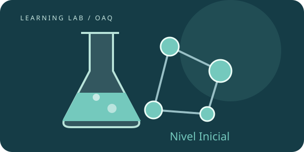

OAQ · ESTUDIO AUTÓNOMO
Nivel Inicial
Construí las herramientas de química: observar sistemas, representar sustancias y calcular cantidades.
Punto de partida. Comenzá con unidades, fracciones, proporciones y potencias de diez.

SEGUÍ EL ORDEN O ELEGÍ QUÉ REPASAR
Las cuatro series del nivel.
Materia, sistemas y átomos
Observar, medir y describir · Fases, soluciones y separación · Partículas y transformaciones · Del núcleo a la tabla periódica
Lecciones + laboratorio + repaso ↗0 de 4 lecciones comprobadasSERIE 2 · 4 LECCIONESFórmulas, nombres y ecuaciones
Leer y construir fórmulas · Nombrar sin perder información · Balancear conservando átomos · Reconocer familias de reacciones
Lecciones + laboratorio + repaso ↗0 de 4 lecciones comprobadasSERIE 3 · 4 LECCIONESMol, composición y gases
Contar partículas con el mol · Deducir fórmulas a partir de masas · Relacionar presión, volumen y temperatura · Usar unidades y condiciones de referencia
Lecciones + laboratorio + repaso ↗0 de 4 lecciones comprobadasSERIE 4 · 4 LECCIONESSoluciones y estequiometría directa
Elegir cómo expresar concentración · Porcentajes y trazas · Preparar y diluir con material volumétrico · De la ecuación a la cantidad de producto
Lecciones + laboratorio + repaso ↗0 de 4 lecciones comprobadas